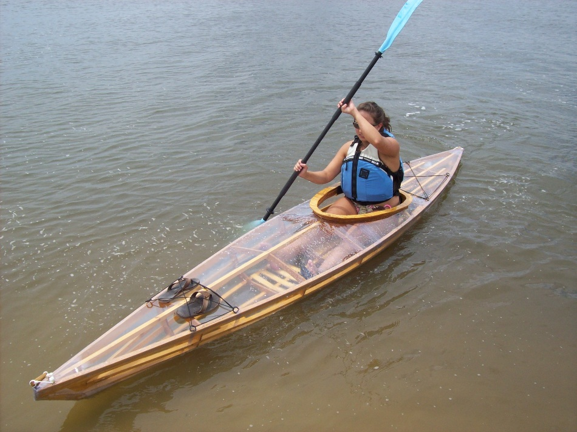

| Sea Bee by Thomas Matechik (US) | Menu Previous Page Next Page |
|

Thomas, from Tallahassee, Florida has completed two Sea Bee's. His comments...." This summer while on my break from college I built one Sea Bee 13 multi chine for myself and one for my girlfriend. The kayaks were both affordable and simple to make; I had a fantastic time building them and I learned a lot from the whole process. Plus, they're so fun! Both kayaks are incredibly light compared to plastic boats I have used in the past and they look great. "
|
|